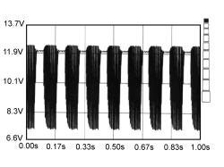

5580HD BUZZER OPERATION CHECK
- Path
- Test > 55 ELECTRICAL EQUIPMENT > 5580 SPECIAL ACCESSORIES > 5580H PARKING OBSTACLE DETECTION DEVICE > 5580HD BUZZER OPERATION CHECK
- Kind
- test / check procedure
- Applies to
- all engines; all production periods
- Interactive page
- https://sloeber94.github.io/elrnDB-fCrm/en/#/194002546
Applies to: all engines; all production periods
STEP | CHECK TO BE PERFORMED | RESOLUTION IF THE CHECK IS NOT OK |
1 | Check rear buzzer impedance - Connect the negative supply terminal for the Examiner to the vehicle earth - Switch on the Examiner and place it in the ohmmeter ambient and carry out the calibration short circuiting the probes - Connect the leads (black and red probes) to the buzzer terminals without disconnecting it from the parking sensors The measurement should be about 51 Ohm which is the value for the buzzer impedance. | Replace buzzer |
2 | Check rear buzzer control line impedance - Disconnect the buzzer connector - Connect the ohmmeter to the connector terminals and measure a value of 230 Kohm which should be the system impedance | - Renew the wiring continuity between the parking control unit and the buzzer see wiring diagram - Replace the parking sensor control unit Op. 5580H10 PARKING OBSTACLE DETECTION DEVICE ELECTRONIC CONTROL UNIT - R.R. |
3 | Rear buzzer positive power supply check - With the key on and reverse gear engaged and the Examiner in the voltmeter ambient - Connect between pin 4 of connector AB of the parking control unit and an earth Check that there is a presence of 12 Volt | - Renew the wiring continuity between the parking control unit and the buzzer - Replace the parking sensor control unit Op. 5580H10 PARKING OBSTACLE DETECTION DEVICE ELECTRONIC CONTROL UNIT - R.R. |
4 | Check rear buzzer signal - Place the key in the on position and engage reverse gear - With the Examiner in the voltmeter function select an end of scale of 20 Volt and basic time of 1 second - Connect the red voltmeter probe to pin 3 of connector AB of the parking control unit and the black probe to earth Get close to the rear sensors with the device working, check for the presence of the electrical signal. Press the START button on the Examiner. The image that appears should be similar to the one below | Renew the wiring continuity between the parking control unit and the buzzer see wiring diagram - Replace the parking sensor control unit Op. 5580H10 PARKING OBSTACLE DETECTION DEVICE ELECTRONIC CONTROL UNIT - R.R. |
5 | Check buzzer operation Check that the buzzer is working properly in the presence of the buzzer activation signal and the positive power supply | Replace buzzer |

Topics linked from this page (3)
- 5560B10 CONTROL PANEL - R+R
- 5580H10 PARKING OBSTACLE DETECTION DEVICE ELECTRONIC CONTROL UNIT - R.R.
- E3090 PARKING SENSOR